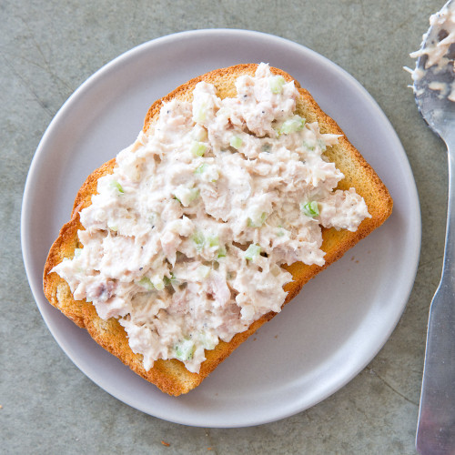

ingredients
- 2 5oz. cans of solid white tuna in water
- 2 tablespoons of mayonaise
- 1 tablespoon of dill pickle relish
- 1 handful of shredded cheddar cheese
- 1 teaspoon of salt
instructions
Open tuna cans and drain water. Mix the ingredients together in a
bowl.